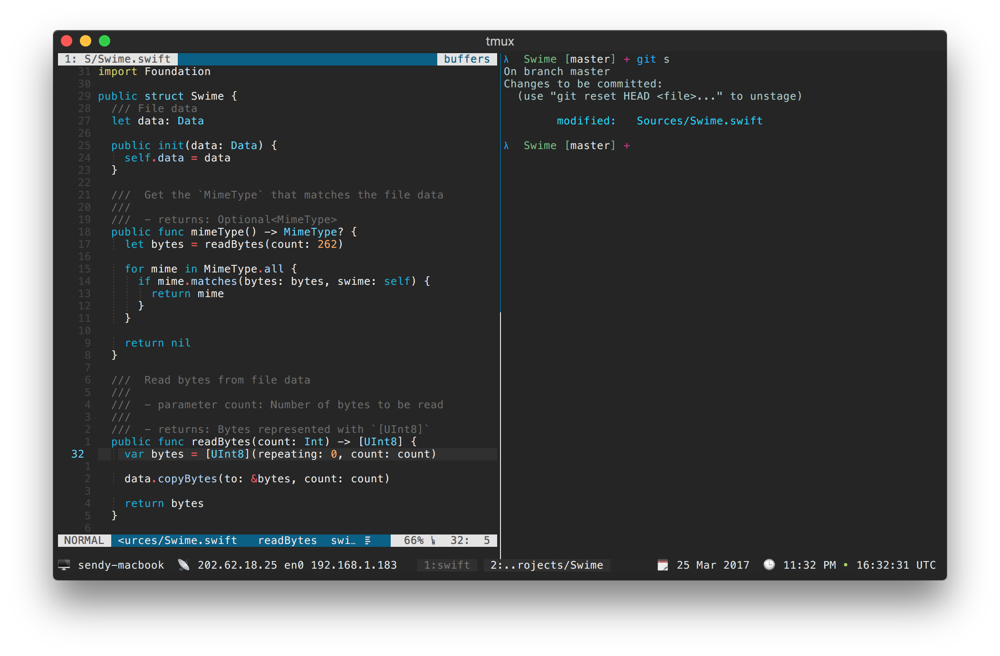
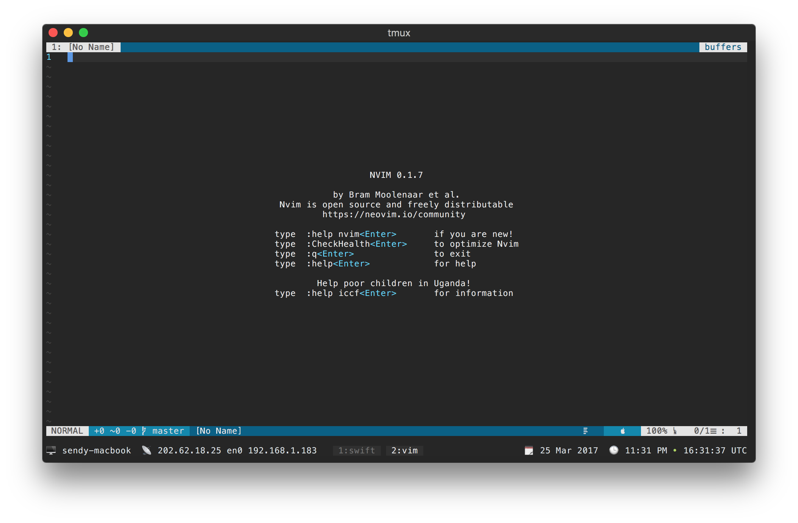

Living In The Terminal
Most of my time is spent in the terminal and I love working within it, so I invest a lot for the best terminal setup to make sure that I’m productive and happy when I’m using it. Here’s a couple of screenshots of my terminal


Here’s the must have list for the best terminal experience
Let’s start with iTerm2, it’s the go to terminal when you’re using macOS and does not like the built-in terminal that macOS has. Some people prefer to use Hyper nowadays but I stick to iTerm2 because it’s a native app (written using Objective-C).
Tmux is a terminal multiplexer, it runs inside iTerm2. I use it to open multiple windows and split panes within the terminal (it can do more than that).
Neovim is a drop-in replacement for vim, I just use it because the project’s motivation is to refactor Vim source code and I believe it’s the future.
One nice thing of working in the terminal is that I don’t need to switch often between applications. Most of my work can be done within the terminal (depending on the work itself). It’s easy to run shell commands when you code in the terminal. The real deal is when you start managing your dotfiles configuration. I put my dotfiles configuration on my github, I just need to clone it and run my setup script to get my ideal work environment 🍻.